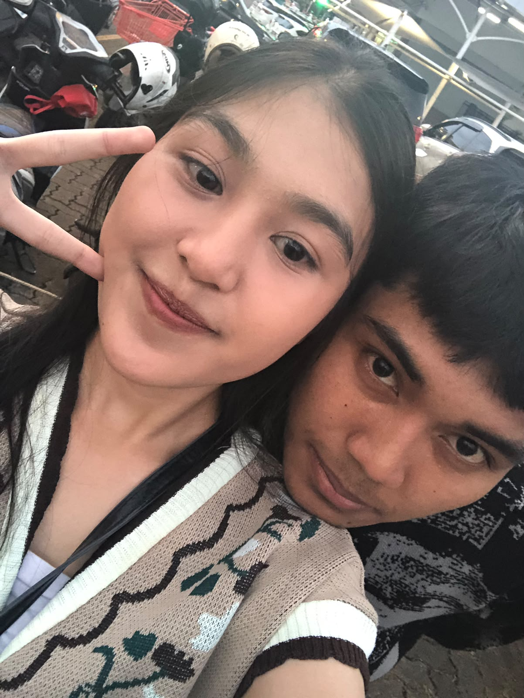
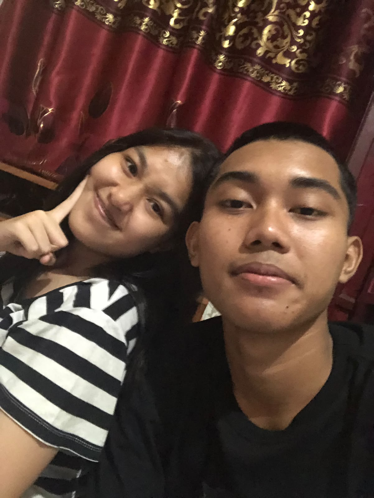
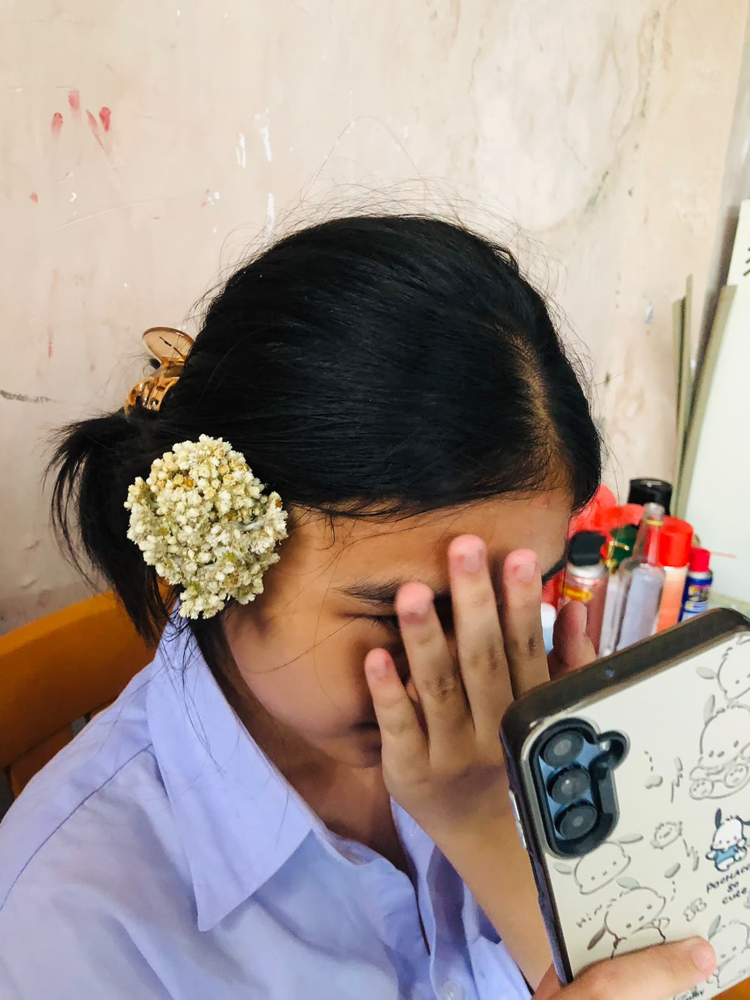
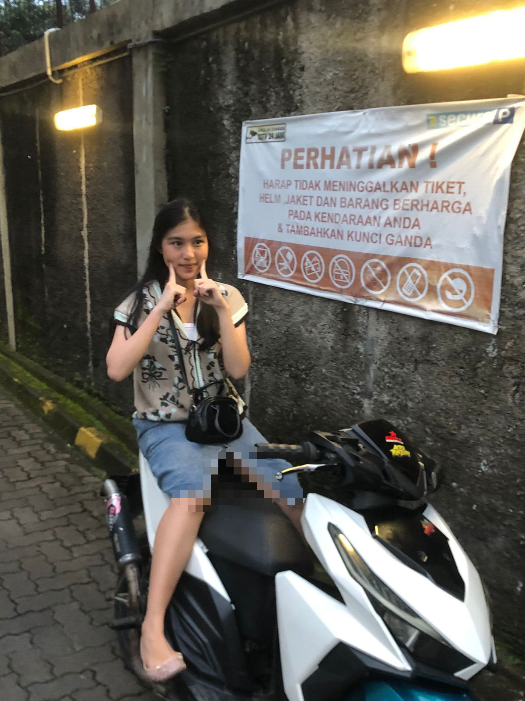
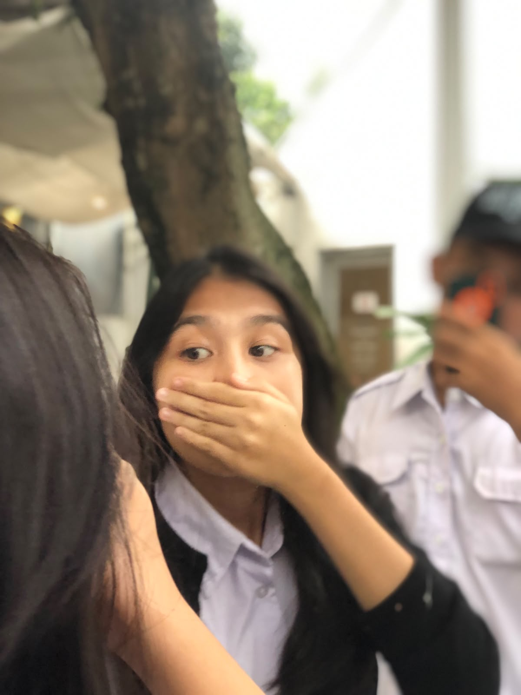

Aku tidak tahu bagaimana kamu menjalani hari-harimu sekarang,
dan aku juga tidak ingin mengganggu hidupmu.
Aku hanya ingin menyampaikan sesuatu dengan tenang.
Terima kasih.
Untuk semua hal yang pernah kita lewati bersama.
Aku belajar bahwa tidak semua orang harus dimiliki untuk bisa berarti.
Ada orang yang datang hanya untuk memberi pelajaran,
lalu pergi ketika waktunya selesai.
Dan kamu adalah salah satunya dalam hidupku.
Kalau suatu hari kamu mengingat aku,
aku berharap yang kamu ingat bukan luka,
tapi ketenangan dari semua yang pernah terjadi.
Aku mendoakan kamu selalu baik.
Selalu dikelilingi hal-hal yang membuat kamu merasa cukup.
Dan selalu punya alasan untuk tetap tersenyum.
Dan kalau boleh jujur,
dalam diam yang tidak pernah aku ucapkan waktu itu…
aku sayang sama kamu.
Tapi sekarang aku sudah belajar,
bahwa sayang tidak selalu harus memiliki.
Cukup menjadi doa yang tidak pernah berhenti.
— mhmdisnnn